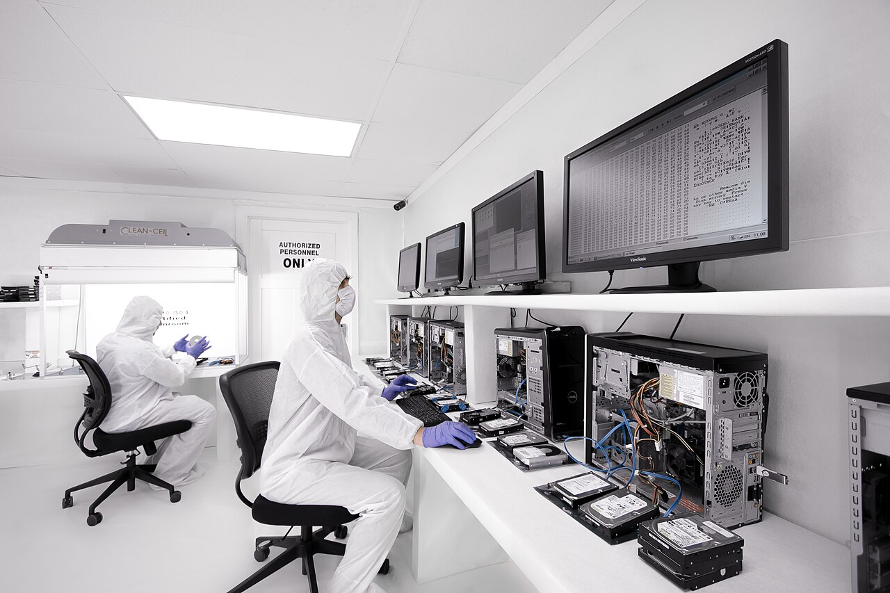
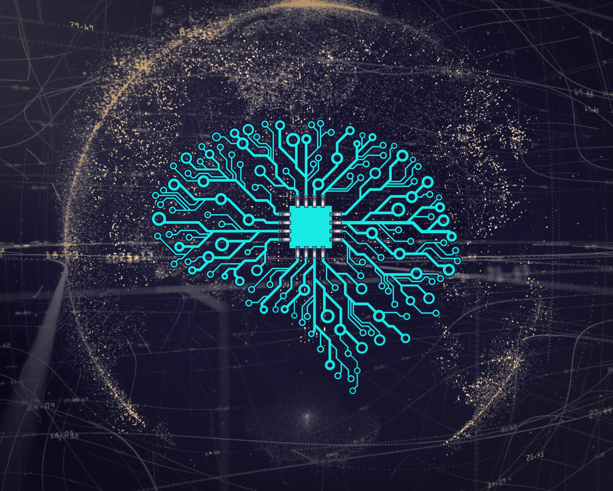
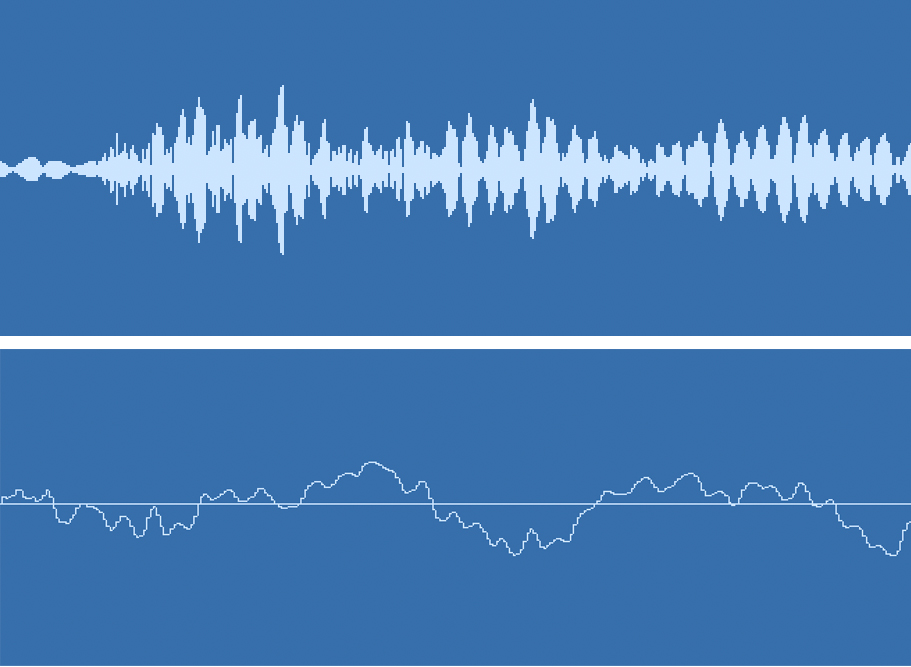

120 分鐘跨科素養課 · 媒體與資訊素養
The AI-Era Detective: Deepfakes, Detection & Digital Ethics
當眼睛看到的可能是假的、耳朵聽到的也可能是合成的，我們要練的不是「不再相信」，而是懂得有紀律地相信。

開場白 · 3 分鐘
Today We Train the Eye of a Fact-Checker
深偽不是電影情節，而是真實發生在香港與內地的詐騙現場。今天我們從現象、技術，一路練到辨識與倫理判斷。
從香港到內地，AI 換臉與聲音克隆的詐騙案件快速增加，金額與件數都在上升。
認識生成對抗網絡與四種深偽，你才知道破綻通常藏在哪裡。
用一套可操作的四步法，加上法律認識與倫理三原則，做出負責任的選擇。
第一節 · 30 分鐘
Part 1 · When Seeing Is No Longer Believing
先不講理論。我們從一個小測驗開始，看看你的眼睛和大腦，有多容易被騙。
第一節 · 真假快閃
Warm-Up: Is This Face Real?
我會依序放出三張人臉照片，請你舉手判斷真假。先別急著看答案——請留意你自己「為什麼這樣判斷」。
仔細看眼睛、牙齒、耳朵和背景，哪裡怪怪的？先寫下你的理由。
閉上眼聽一段「孫子」的求救電話。你會不會相信？為什麼？
公布答案，並討論：哪些線索可靠？哪些其實只是直覺？
第一節 · 真假快閃
Why Do We Fall for It So Easily?
不是你笨，而是深偽攻擊的是每個人類大腦都有的弱點。
臉孔辨識是演化留下的本能，又快又直覺，但並不精準。深偽專門迎合這種「快速判斷」。
詐騙最愛用「緊急」「限時」「別告訴別人」製造壓力，讓你來不及冷靜查證。
第一節 · 真假快閃
What Exactly Is a Deepfake?
「深偽」（Deepfake）是「深度學習（Deep Learning）」與「偽造（Fake）」兩個詞的組合。
修圖、剪接、找人配音。痕跡較多、成本較高，仔細看通常找得到破綻。
用大量資料訓練模型，自動生成幾可亂真的臉、聲音與動作，成本越來越低。
第一節 · 真假快閃
Not the Future — It's Happening Now
先看香港的數字。這些案件不發生在別的國家，就在我們身邊。
2026 年首七個月，涉及深偽與科技罪案的數字。
與去年同期相比，案件數量明顯飆升。
一宗聲音克隆詐騙案，損失金額之高令人警惕。
第一節 · 真假快閃
Case 1: When a Familiar Voice Is Faked
騙徒取得一段短短幾秒的錄音，就能合成出幾乎一樣的聲音。
假冒子女、孫兒向家人求救要錢，語氣逼真、情境危急，讓人第一時間只想著救人。
受害者在「親人出事」的焦慮下，來不及冷靜查證就匯款，事後才發現全是騙局。
第一節 · 真假快閃
Case 2: Organized Deepfake Fraud Rings
2026 年 1 月，香港警方搗破一個以 AI 技術行騙的詐騙集團。
集團以 AI 換臉等技術假冒他人身份，進行有規模的詐騙。
受害人多、金額大，顯示這已經不是零星個案，而是產業化的犯罪。
有人以為「只是幫忙」，卻已經在不知不覺中成為詐騙鏈的一環。
第一節 · 真假快閃
Mainland Case 1: The "Perfect Partner" on Screen
你以為在跟真人視訊，其實鏡頭裡的臉，可能是即時換上去的。
騙徒以美女影像進行視訊通話，取得信任後，再以各種理由要求轉帳。
法院判處有期徒刑 3 年、緩刑 4 年。視訊裡的「真人」，也可能只是一張被套用的臉。
第一節 · 真假快閃
Mainland Case 2: Grandma Liu and Her "Grandson"
最深偽的詐騙，往往不是騙你的眼睛，而是騙你的感情。
騙徒用 AI 合成孫子的聲音，佯稱在外出事、急需用錢，讓劉奶奶慌了手腳。
長者資訊相對弱勢、又最心疼家人，往往成為深偽詐騙的高風險族群。
第二節 · 35 分鐘
Part 2 · Inside the Technology — and How to See Through It
認識生成對抗網絡與四種深偽之後，我們要學會一套可操作的辨識流程。
第二節 · 技術與辨識
The Engine of Deepfakes: Generative Adversarial Networks
想像有兩個 AI 在互相較勁：一個負責「造假」，一個負責「抓假」。

不斷生成假的影像或聲音，想辦法騙過判別器。每次被識破，它就調整自己，再做得更逼真。
努力分辨真與假，並把「哪裡假」的線索回饋給生成器，讓對方繼續進化。
第二節 · 技術與辨識
Four Common Types of Deepfakes
技術本身沒有好壞，關鍵在於「有沒有取得同意」與「有沒有用來傷人」。
把甲的臉換到乙的影片上，是最常見的視訊詐騙手法。
只要幾秒錄音，就能模仿一個人的聲音與語氣。
讓照片中的人做出他從未做過的動作與表情。
整個人物與場景都由 AI 憑空生成，現實中根本不存在。
第二節 · 技術與辨識
The Four-Step Method: Stop · Look · Check · Find
這是一套刻意設計來「拖慢你」的流程。愈急的時候，愈要照著走。
先停下來。任何催促你「馬上」的訊息，都是警訊。
用眼睛看臉部與光影，用耳朵聽聲音與背景。
這內容從哪來？什麼時候發布？原始出處是誰？
用查核工具，或直接打電話向本人求證。
第二節 · 停看查找
STOP — Pause Before You Believe or Share
詐騙的成功，多半靠「讓你來不及想」。以下四種訊息，最需要你先踩煞車。
第二節 · 停看查找
LOOK (1) — Clues on the Face
先從最直覺的地方開始：一張合成的臉，往往藏著不自然的細節。
臉與頭髮、耳朵的交界處，是否模糊、抖動，或顏色不自然？
眼神是否呆滯、眨眼頻率異常，或眼鏡反光的位置不一致？
嘴型與聲音是否對不上？牙齒是否模糊成一整片、缺乏細節？
第二節 · 停看查找
LOOK (2) — Clues in Sound and Background
當臉已經看不出問題，就把注意力移到耳朵和畫面的角落。

語氣是否平板、缺乏呼吸與停頓？背景有沒有異常的電子雜訊或剪接痕跡？
光線方向、影子、物件邊緣是否一致？背景會不會突然扭曲、閃爍或糊掉？
第二節 · 停看查找
CHECK — Trace the Source
真偽難辨時，退一步查「來源」——因為造假者最怕被追根究柢。
這是誰發布的？什麼時候發布的？他為什麼要讓我相信這件事？
用其他可信媒體或官方管道查同一件事，看看資訊是否一致、有沒有互相矛盾。
第二節 · 停看查找
FIND — Use Tools, and Ask a Real Person
工具能幫你查證，但真正能擋下詐騙的，往往是「找到本人」這個動作。
查核平台與事實查核組織，常有現成的辨識報告可參考。
以圖搜圖，或用影片的關鍵片段搜尋原始來源。
掛斷後，用你原本就知道的號碼回撥本人或家人。
香港可報警或向反詐騙協調中心求助；不確定就先問。
第二節 · 課堂練習
Classroom Activity: Detectives at Work
分組進行，每組拿到一段可疑素材，用「停、看、查、找」四步寫出判斷與理由。
4 至 5 人一組，選出一位組長與一位記錄。
領取素材：可能是一段影片、一張截圖，或一段語音。
依序套用停、看、查、找，寫下每一步的觀察與發現。
說明你們的判斷，以及「最有說服力的一個線索」。
中場休息 · 5 分鐘
Short Break
回來之後，我們要談更難的問題：當 AI 可以模仿任何人，法律與倫理該怎麼回應？
第三節 · 35 分鐘
Part 3 · The Legal and Ethical Battlefield
技術跑得比法律快。這一節，我們看香港與內地怎麼管，也練習自己做判斷。
第三節 · 倫理與法規
Hong Kong: How Existing Laws Apply
香港目前沒有專門的「深偽法」，但既有法例已經可以處理大部分濫用行為。
| 法例 / 機構 | 規範重點 |
|---|---|
| 《個人資料（私隱）條例》 | 未經同意使用他人的影像、聲音等個人資料，可能違反私隱保障的規定。 |
| 《盜竊罪條例》第 16A 條 | 「欺詐」：以欺騙手段騙取利益，例如用深偽假冒他人行騙。 |
| 《盜竊罪條例》第 17 條 | 「以欺騙手段取得財產」：用虛假陳述取得金錢或財產，屬刑事罪行。 |
| 個人資料私隱專員公署 | 發布防範深偽的指引「錦囊」，協助機構與市民降低風險。 |
第三節 · 倫理與法規
What Schools and Parents Can Do
法律是最後的防線，教育與制度才是第一道防線。
明確要求未經同意，不得製作或散布他人的換臉影像與合成聲音。
與其一味恐嚇，不如訓練查證能力，並培養對他人的同理心。
認識私隱專員公署、警方與學校輔導室等求助與檢舉管道。
第三節 · 倫理與法規
Mainland China: The Deep Synthesis Regulation
2023 年 1 月 10 日生效，是全球最早針對深度合成技術的專門規範之一。
第三節 · 倫理與法規
Labelling Rules and Criminal Liability
規範不只要求「標明」，更把惡意濫用直接連上刑事責任。
要求 AI 生成的文字、圖片、音訊與影片加上明確標識，讓公眾一眼就能辨識。
利用深偽進行詐騙、誹謗，或製作他人不雅影像等，都可被追究刑事責任。
第三節 · 倫理討論
Three Ethical Dilemmas
法律管得到的地方，用得著法條；法律管不到的地方，靠的是判斷。以下三個情境，你會怎麼做？
同學把你的照片做成換臉梗圖，全班都覺得好笑。你會怎麼反應？
對方自稱是某個人，還傳了「視訊」。你會怎麼查證？又會告訴誰？
用 AI 生成某位明星的聲音來做作業或影片，可以嗎？界線在哪裡？
第三節 · 倫理討論
Three Principles for the Grey Zone
當法律還沒跟上、規範還不清楚時，這三條原則就是你的指南針。
使用他人的臉、聲音或身份之前，先問自己：他同意了沒有？
就算技術上做得到，也要想清楚：這樣做，會不會傷害到誰？
如果是 AI 生成的內容，就明白標示，不假裝它是真的。
第四節 · 15 分鐘
Part 4 · Recap and Action
帶走一套方法、一份勇氣，還有一個對「信任」更清醒的態度。
第四節 · 總結與行動
Three Things to Take Away Today
從香港到內地，AI 換臉與聲音克隆正被用來行騙，案件與金額都在上升。
生成對抗網絡讓人臉與聲音越來越真；破綻會消失，但流程不會。
用一套刻意放慢的辨識流程，加上法律認識與倫理判斷，做出負責任的選擇。
第四節 · 總結與行動
Five Things You Can Do Starting Today
看到催促或恐嚇訊息，先停 30 秒，不急著轉發或匯款。
收到親友求救，先掛斷，再用另一個號碼回撥本人。
用反搜圖與關鍵字，找出內容的原始出處與時間。
未經確認的影像或聲音，不轉傳，更不當作素材使用。
被冒用或被騙，立刻告訴可信任的成人，並報警處理。
第四節 · 結語
在 AI 時代，真正的能力不是懷疑一切，而是懂得有紀律地相信。
In the age of AI, the real skill is not doubting everything — but learning to trust with discipline.
你已經有了辨識的工具、法律的基本認識，還有心中的三條原則。接下來，換你在生活裡，當那個願意「停下來查證」的人。